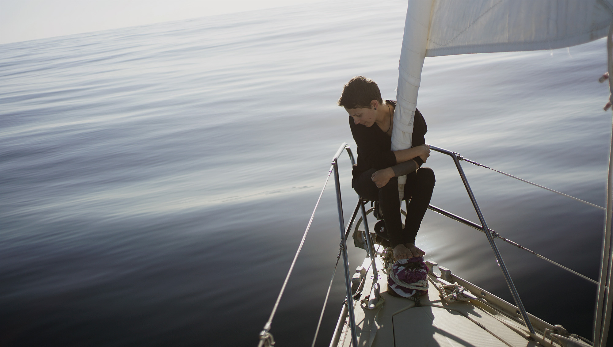
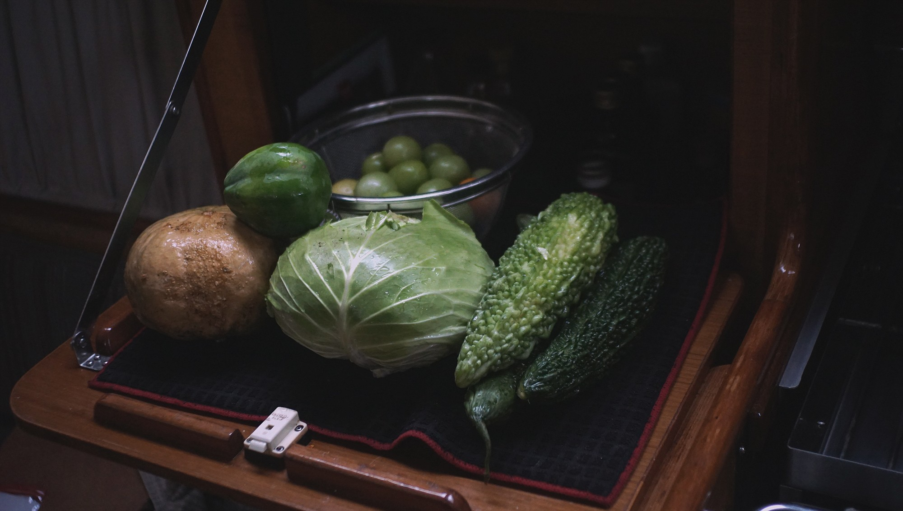

off the grid
- why live off grid
- water
- rain catchment
- showers
- power
- provisioning
- medical
- books
- internet
- visas
- money
- budget
- lpg
- waste
- essentials
- nutrition
- distractions
- work
- troubleshooting
- documenting
- computers and software
why live off grid
People choose to live off-grid for self-sufficience, resilience, or ecological reasons. For us, to live off-grid, is most of all letting go of the numbing culture of convenience. When anchored in a foreign country, far from everything and everyone, you depend on your own self, your vessel and what's on it. When something breaks, it falls onto you to fix it. Electricity becomes a finite resource, limited to the amount of solar panels on deck, and to the size of your battery bank.
This way of life is not necessarily restrictive, you might find that learning to live in communion with your vessel offers a peace of mind previously unimaginable.
Maslow's pyramid of needs positions as most basic, or most crucial, physiological needs, like water, food, warmth and rest, followed closely with security and safety. Meeting these basic needs, while living aboard a sailboat, takes but some planning and time.
Aiming to reduce our footprint, by learning to live according to the sun and the wind has been an excellent exercise toward mindfulness, something we much needed to better navigate today's attention economy.
water
It's easy to forget that water is not inexhaustible when it flows so readily by the turn of the tap. Living on a boat, you develop a deeper connection to this precious resource. Depending on where you go, you'll have to treat it, catch it, carry it or pay for it.
Basic needs are covered with a mere 10 liters of water a day per person. A person needs between 2.7 and 3.7 liters of drinking water each day. When anchored near a port, once a week, we would ferry four bins of 10 liters from shore to the boat. To conserve water, our sink faucet is operated with a foot pump, where each push draws out 60 ml of water, allowing us to measure our usage.
On passages, we carry extra Jerrycans of water, enough to sustain two people for a few more weeks than the length of our trip. Having separate bins makes for a more resilient system, if salt gets into one tank, it won't corrupt the entirety of your supplies. A sure way of preventing contamination, is to check all o-rings and tanks for leaks before leaving. We chose not to have a desalinator aboard Pino, and have managed well without it. It's a device that is expensive, high maintenance and power-hungry.
rain catchment
Rain catchment is a good way to top-up your tanks. Some sailors set up tarps to catch and lead the water into Jerrycans, others have the water flow directly into their main tank — I don't recommend doing that unless you've got a good filtration system. When it rained, we'd collect water trickling down from our aft solar panels into a 20 liter bucket. We collected this extra water for showers, laundry and washing dishes.
While the rain itself might be safe to drink, it carries dirt or whatever may be on your tarp, or deck. And depending on where you are, the rain may have environmental pollutants mixed in. For these reasons, I recommend using rainwater for purposes other than drinking and cooking. If you are to drink it, it's important to boil it first for at least 1 minute, or to run it through a good two-step filtration system.
Even if you don't plan on drinking it, it's a good idea to treat the water you catch. The easiest way to do this is to add chlorine bleach to your supply. This is something we've done, and continue to do. The suggested ratio of chlorine to water is 2 drops bleach for 1.15 liters (1 quart). The above ratios are for bleach containing 5.25% Sodium Hypochlorite. This amount depends on the concentration, the ratios will be different for 5.25% than for 8% chlorine bleach (1 drop: 1.15 l). Only use regular, unscented chlorine bleach products that are suitable for disinfection and sanitization, as indicated on the label. A good way to remember these ratios, is this saying:
“You must be 21 to drink”.
2 drops bleach per 1 liter (quart) water, easy to remember. Note that 1 quart is slightly less than 1 liter.
showers
Coastal locations like marinas and public beaches often have fresh water showers for local swimmers or marina guests. Usually free, or available for use at a nominal fee (1-2$ for 5 minutes).
We use a pressurized sprayer as a shower, it uses little water and can be found in most hardware stores.
When water is scarce, we bathe in salt water, and rinse with fresh water.
power
To know how many solar panels we needed, we made a list of our indispensable electric systems and their energy requirements, that included lighting, appliances, laptops and more. We looked up their power usage in watts, for example, my Macbook Pro draws 60w, if I were to use it for 6h, it would draw roughly 360w a day. Adding up the wattage gave us a rough estimate of our daily use.
Of course, the energy coming from solar panels fluctuate based on the angle of the sun, the cloud coverage and other obstructions. Our own power usage aboard can also vary a lot from day to day, depending on what we choose to do that day. While on passages, our capability to capture sunlight is reduced to keep our windage low, but our energy consumption is equally reduced for not much else is drawing power than our navigation electronics like the AIS, the wind meter, and at night, the lights.
An anchored board will orbit its anchor according to the wind, and rarely stays in the same spot and so it is difficult to position panels to guarantee an optimal draw. We've had many cloudless days with the mast casting a shadow covering a large part of our panels. On moments such as this, or cloudy days, we adapt by using our appliances less. We live according to the weather.
Instead of scaling our battery banks to our needs, we chose to adapt our needs to the available space for batteries and surface for panels. It's also important to consider that more solar panels often mean more windage.Having a complex system exposed to a harsh environment like the sea, creates opportunities for things to break. Saltwater corrosion is a very real threat. Nowadays, many electronics, or 'smart' systems, use proprietary parts, making them difficult to repair. We've encountered many boats, stuck in port for weeks and weeks, waiting for parts to arrive. An over-reliance on convenience products may bind you to services on land, in a way that you may not want.
Aboard Pino, we carry a small portable generator as a backup to our solar. Our Honda’s 1,000-watt generator is compact, fuel-efficient, lightweight, and can run for 7.1 hours on 2.7 liters (0.6 gal) of gas. We also have our engine's alternator, which we use to charge up batteries. We consider these options as backups, as redundancy to our main source of power, solar.
provisioning

While modern grocery stores can be found in larger cities, these can often be far apart. In smaller towns, fresh vegetable and fruit markets are seldom open everyday, most only once a week. We picked up the habit of buying food in large quantities. We stock many types of whole grains (buckwheat, whole wheat, cornmeal, oats). Different grains offer different nutritional profile, and meal options.
Canned, dried or shelf-stable foods are a good alternative to refrigeration. Choosing canned foods is something worth experimenting with. Buy an assortment, find ones which suit your tastes. We usually look for unsalted ones, without corn syrup.
Our favourite canned vegetables are mushrooms, mixed beans and tomatoes. Our favourite dry foods are nori, oats and cornmeal. Our favourite shelf-stable foods are tetrapak tofu, spicy sauces and various japanese condiments.
We buy flour in bulk, and keep it separate jars (each accommodating a 2 kg bag). Keeping some types of flour separate helps to avoid problems, like weevils. If one batch is contaminated, the other might be fine.
medical
Most city-centers will have a hospital, ones out in the islands - south pacific for instance- tend to be good and cheap, but in most cases you must be self-sufficient. That includes a well-stocked medical supply and the know-how to fix yourself up. In case of a serious injury, you must have the means to get yourself to the nearest clinic. We use DAN Boater, a repatriation insurance that covers helicopter/transportation fees.
We find that medical apps for mobiles, and FM armyfield manuals, are helpful when dealing with minor burns, cuts and various aches.
books
While books are great they take up a lot of space, are prone to mold, and in warm countries, they ultimately attract insects. To protect them from moisture, we have resorted to keeping them in ziplock bags. In cold weather, if your boat is kept warm and is well-ventilated you won't have to worry.
Amongst sailors, and likely other types of nomads, books and movies are a trading currency. Social hubs will often have bookshelves inviting you to take and leave a book. We have found countless gems in those.
Most of our books now, are on our Kindle Paperwhite, which takes little battery and allows us to read at night.
internet
We often find ourselves away from hotspots, and even cellphone reception, but internet can be found anywhere nowadays. The only difference is, you may have to pay more for it. For instance, internet in Tonga is expensive and slow, while in Fiji (the next country over) internet can be found anywhere and it's dirt cheap. You can get a sim card anywhere easily.
We try - as much as possible - to send periodical location updates to our families - we use a satellite phone operating on the Iridium satellites network to do that. The Iridium Go satellite phone costs around about 100US$/month and allows us to keep in touch with our friends and families via SMS & emails, from anywhere in the world - even the middle of the ocean.
Since connectivity can be rare, and far apart, the time that we do have online is spent wisely. Uploading backups, responding to requests from users, updating our friends and families with our new location.
As cellular data is often expensive around islands, disabling autoplay on videos, and disabling image previews on social media is near obligatory.
visas
Some countries require visas in advance, most do not, this also depends on your nationality. The visas are generally free, unless you require an extension for your stay. Upon entry into a new country, you may need to pay the immigration, customs, health and quarantine officers.
Upon leaving, a departure tax and varying amounts based on the size and weight of your vessel might also need to be paid. These fees can sometimes total up to 200US$. We find Noonsite to be a good up-to-date ressource for country-specific information on fees.
money
Not all places have ATMs, but always have a bank nearby that will take a VISA card. In the islands we prefer to pay in cash, a lot of places, like fresh food markets, don't accept credit anyway.
Better make sure that your credit card will not be blocked when used in foreign countries, and that it will expire at a location that will allow for you to receive a new one.
budget
Provisioning can be expensive in certain countries, so stocking strategically with cheaper stores, ahead of time, can help to save money.
A rule is, if you're shopping and you see something you like at a good price, buy tons of it; chances are you won't be seeing it again on your next visit (turn-arounds are quick in some stores, and won't re-stock the same items necessarily).
Canning is essential when traveling on a budget, a pressure cooker and glass jars will save you money and will help reduce waste. Preparing your own stores, also means that you choose what goes in it, therefore reducing your intake of added salts and sugars.
lpg
For cooking, we carry two tanks of propane. Our main tank is 9 kg (20 lbs) and lasts us for up to 4 months, and our second smaller backup tank is 5 kg and ideal for when our main tank unexpectedly runs out.
waste
Waste is always a tricky topic for boaters, because it's something you've got to deal with yourself. Keeping surrounding waters clean and free of contaminants is important. The primary environmental concern with sewage is not the urine, which is sterile, but feces which contain bacteria, pathogens, and nutrients, and should not go overboard. The septic tank may only be emptied, from at least, 3 miles from shore.
Pump-out stations will help you get rid of waste, but are only available near a handful of cities. Composting toilets might be a good option for those who do not want to haul anchor and head offshore to flush their tank. Having a composting head aboard frees up much-needed space. It also means no holding tank to empty, no smelly hoses to unclog, and little to no maintenance. You can build your own composting head or buy one of the many models on the market.
Most models have a urine diverter, separating the liquids from the solids to ensure contamination-free composting. Some models also have fans, to help the solids dry out and remove odors. In composting heads, urine accounts for ~85% of the waste volume in tanks. Having a diverter is great because it increases capacity for solids, which means not having to empty the tank as often. The ideal medium for processing your waste into compost depends on how you plan on using your toilet and vary between sawdust or peat moss. C-head wrote a very good article on the subject.
Disposing of the waste requires a bit of planning. If near a city, partnering with someone on land with composting facilities is ideal, but otherwise, bringing the solids to the trash in composting bags is the next best thing. When full, it's possible to empty jugs of urine into public toilets. If there are no facilities nearby, capping it off to dispose of later, and replacing the jug is a good option.
essentials

Being in good physical shape is important, wether you need to run, jump or lift something heavy without injuring yourself. Knowing how to tie solid knots is paramount, knowing how to tie a good bowline knot could save your life.
A good stainless-steel knife, a spindle of paracord, a phone-size ziplock bag, a waterproof flashlight and a good drinking bottle for fresh water will go a long way.
nutrition
Following a plant-based diet while traveling is possible. Planning provisions ahead is important, a lot of the places may not have specialty items. Nutritional yeast, miso, dried legumes, quality wholegrain flour, flax seeds and B12 supplements, are especially hard to find.
Buying a large supply of shelf-stable tofu is always a good idea; it's a product that is high in protein and low in calories, that can be used to make sauces and sautees, while providing calcium (makes sure it has calcium sulfate or calcium chloride in the ingredients list). For iodine, carry iodized salt, or seaweed (wakame or nori). Other essentials, like omega 6 (LA, linoleic acid), can be found in pumpkin seeds, sunflower seeds for instance, omega 3 (ALA, alpha-linoleic acid) can be found in linseed and chia seeds (about 1 tbsp a day).
Staples like nut milks and oats are found everywhere, varying in price and quality. There will always be fresh vegetables available, but the selection can be poor at times. Carrying cans and and dried version of those foods can help, for example: canned and dried potatoes. Canned spinach may not be appealing, but in a place where there are no leafy greens available, it's better than not having any at all. Canned is not ideal, because it has a lot of added ingredients like salt and sugar, but if you plan in advance you can buy brands that have little additives.
Eating frozen, can help in a bind, a lot of frozen vegetables don't lose their nutrients, like Brocoli for instance. Most places will carry frozen goods, and it's generally cheaper than buying the same item fresh. If like us, you lack a fridge, get a bag with insulation or a cooler and keep it in there with other frozen goods. It won't keep forever, but it helps to slow the thawing process.
distractions
When at anchor, it can sometimes be difficult to stay focused. The weather is king, it determines whether or not we can work. If the weather is foul, we are on anchor-watch to make sure we don't drag.
Waves also makes it hard to do simple tasks like writing, or drawing. Depending on the direction of the wind, we need to move the boat and that too, takes focus and time away from work. Calm and sunny days, are distracting in other ways: when the water is clear and teeming with colourful fish, it is difficult to resist jumping off.
It is easier to work on projects when docked, as we need not worry about the weather or the charge of our batteries.
work

Working online without a constant internet connection is feasible, but painful. Still, there are ways in which some of the friction can be removed from the process.
Getting local SIM cards, with blocks of data, works well within cellphone reception range. But in the constraints of expensive cellphone data, uploading large files can be made possible by offloading heavy-lifting onto remote servers; having your server build and upload your projects instead of using your laptop batteries and broadband.
There is no solution to uploading videos to youtube, it's a costly and lenghty process. We have made the decision to keep our videos under 5 minutes to help reduce upload time.
troubleshooting
Tools like Offline Wikipedia, digital encyclopedias and dictionaries a great assets to have aboard. Recipes can often be devised from dictionary descriptions of foreign fruits and vegetables.
In the case of a nomad programmer, having the current programming language documentation & various source files is an asset. Prior to going offline for a few days, we often rip entire sites, or capture specific pages as webArchives. The same goes if drawing references are needed, projects are planned ahead and references are collected while a good internet connection is available.
documenting
We use a GoPro Session4 as well as a Sony a6000 to film our travels. The GoPro has the advantage of being light and waterproof - making for a perfect everyday-carry camera. Shooting with the SLR requires more planning as it can only used in fair weather.
We film as much, and as often as we can. At the end of each month, we watch our footage and write a summary of that month's events. We plan the monthly capsules ahead, and we gather footage based on what is needed. While one is busy recording the narration, the other writes music, the two tracks are then edited together (using Blender) with the collected footage. We have our respective tasks when it comes time to edit, but both of us take part in the filming.
In rough weather, we prioritize our own safety above all, and so we rarely have footage of rough seas.
computers and software
Salt water is highly corrosive, even an open window can let in salt air and long term, it can damage electronics. The usb ports of our laptops, as well as our usb cables have suffered damage as a result of this. We now store all devices and cables away after use, in large plastic containers with added moisture absorbers (iron oxide packets, silica gel or camphor tablets). Since we use our phones for navigation, or to listen to music outside, we keep them in protective sleeves.
Having backups for our devices — this includes backup computers — is important. Carrying extra power adaptors and mini usb cables are a must.
If you can work on a machine that costs less money, and that is easy to repair (no proprietary parts), do it. Having a computer that you can repair will keep you working, even if parts fail. Power consumption is also something to consider when choosing a computer, choose one that uses less power, like a Raspberri pi.
The Raspberri pi 4 is very powerful. It costs 40$, it has 3 UBS ports, 4GB of RAM, it can output 4K video at 60 Hz and has dual-monitor support. Because it's small, it's easy to carry many of these. We use Pi computers as our media station and another as a work station.
Devine has a Macbook Pro 2012, and Rekka has a 2010 model. Both are still in use. We prefer to continue to repair working computers than to purchase new ones, as discarded electronics don't always get recycled properly, and clog up landfills. We both run Elementary OS on our Macs. We carry a La Cie Rugged Portable Hard Drive that is waterproof and shockproof, we store all of the footage we shoot as well as backups of files that had not yet been uploaded online. We also carry a SATA hard drive dock, for extra data.